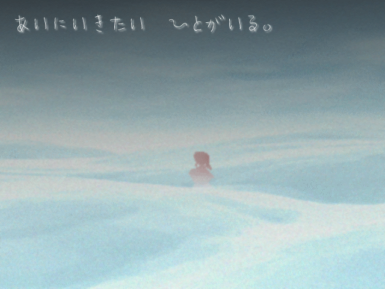

| << Back | トップページ | Next >> |
| No.66 - ★フレイミングリターンズ（旧題：炎の他宅警備員） |

| 本体ダウンロード(1.52MB) / BBS / 投票 / 遅刻提出済 | |
| 作者：バーティカル外藤 | 使用ツール：2000 |
| ジャンル：君に別れを告げて君でない他の誰かに逢いに行くｋｓｇ | 配信/投稿：とりあえず可/とりあえず可 |
| 作者コメント： 完成しました。百合ですいません。 フレイムがわてりとちゅっちゅするために奮闘するゲームです。 冬の嵐を乗り越えてわてりの家まで行こう！ 短編ksgなので他の作品をやり終えてからどうぞ。 | |
| 管理人コメント： 布団は何も言わない。ただ君はその布団に入ることができる。 ∧∧ /(*ﾟДﾟ) ﾌﾄﾝｻｲｺｰ / У~ヽ (＿_ノ､＿_) | |
| 更新履歴： 2014/1/3 本体修正 パッチ追加 2013/12/29 遅刻提出 タイトル SS アイコン コメント変更 2013/12/24 登録 | |